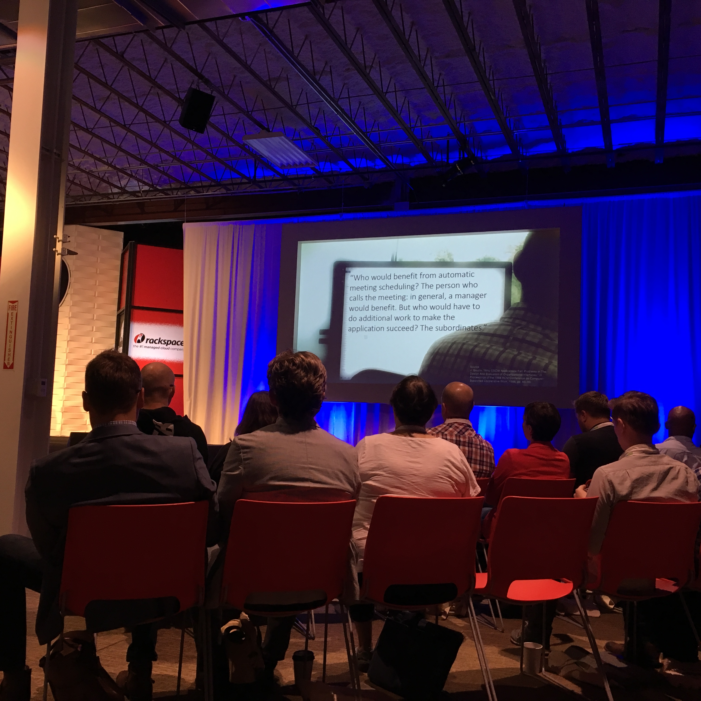
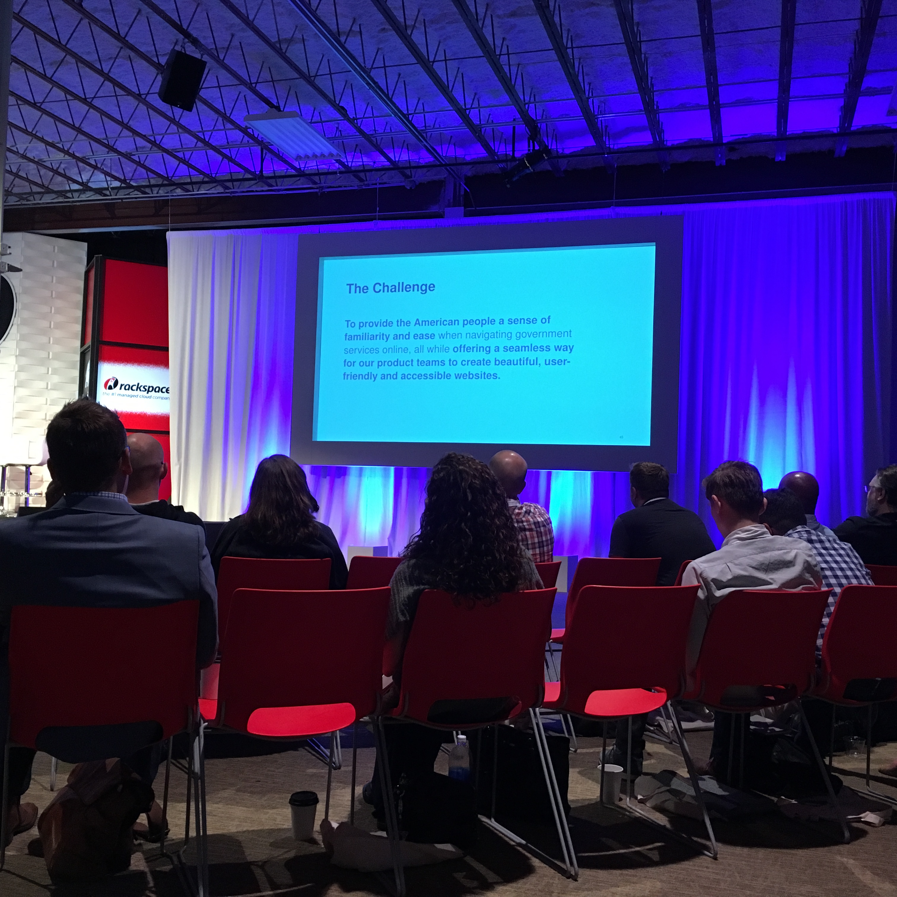

Keynote: Everything is about to change: software as material, Greg Petroff
Architect originally
Business is waking up to the value of UX and design and its importance
Harvard Business Review: The evolution of design thinking
Design management value index, design companies outperform their peers in the marketplace
IXDA: Interaction Design Association
Risk
Five emergent thing:
machine learning
Google go beat a grand master chess player and learned to play like a human. systems are learning
amazon echo--building knowledge graph at a fast pace
our jobs may become automated
IOT: Internet of Things
IP address for machines and cloud computing and handle massive volumes of info.
systems that can tell you their past, present, and future, with analytics you can predict future behavior based on scenario analysis: market, weather patterns, conditions, real time analysis
50 Billion devices w/ a URL
Security
Most issues are human error, answering emails and adding usbs to devices
Measure risk of placing data into environment
Embed into experiences
More data we share, the more our lives are transparent
Work to protect people's identity
Edge compute
Compute is basically free, Edison chip the size of sd card
Machines more intelligent and capable of using iot and cloud connectivity
Block chain
Disruptive platforms
Like uber, disrupting taxi service
new tech stack
build software differently
engineers struggle
Value proposition change, if you don't do it, someone will
Spin up software as a service quickly because of AWS and forking other applications
Iterate your way into a good outcome
end of product requirement document
Chunking software into smaller chunks, so much easier and unleashes productivity in a positive way
Systems of Inversion
systems of record
End up of having too many applications
Helped manage workforce
20 year old idea
systems of engagement
social graph to connect people and their needs
slack, Facebook, twitter, salesforce
helps understand how people work
systems of assets
doesn't matter if it's a thing or person, using tech platform, ought to be able to assemble everything you need in a moment
asset centric construct - requires a slew of conditions not available 5 years ago, but are now
Context first
understand what you're doing, and i will deliver the right experience to allow you to be successful
algorithms push you to connect with those you normally connect with
New York times: choose your news based on context
Behavior model
understand how humans behave in systems is important
Smart rooms, adjust light and temperature, self aware experiences
Now what?
No one understands the new ingredients
New capabilities are too broad and no one has experience, provide ambiguity for organizations
business has pressure with less productivity gains and need to transform
smarter companies are adopting technologies and being smart in deploying them
problem because of prediction frameworks:
what we do next is based on past experience but it doesn't work anymore
going to be easy to write software in the future with platform as a service space
there will not be barriers, people can't say you can't do that
What to build and why?
we are good at what if
we will learn how to build software in this modality to building
Design is a core to strategy
research matters and context is key
cannot shove software out the door and hope to be successful
Adductive: what if thinking: we are the idea generators
ambiguity can be your friend. do better things when things are fuzzy
we understand humans and what if we teach the machines how to feel
We get to become the innovator and leader and we need to make sure it is design led with an experience connected to it
Need to harness creativity
Read and follow:
Jeremy Howard
MIT Technology review magazine
Designers need to learn to speak business over code
Look to shared economy because that is where business are testing ideas
look to subscription based models
UX learns how to write into the backlog for acceptance criteria
Has reqs, but make it smaller, rough outline. need to know the first thing to do and do it and make it great. can manage change and even if you write a detailed req, you may not know until you dig
In smaller pieces and can forget the path
Theme1: How to succeed when everyone is your user, Ted Booth
Ted Booth, honeywell
Designers hate filling out your time card Sam
Data exhaust and personal data: learning from consumer products to enhance enterprise ux, Sam Ladner
Microsoft experience and at amazon now
Book: Practical ethnography
You need to understand the enterprise as a work place. it is where people do a specific activity
Research people not tech

Insurance: Digitize effort chained people to desk and not talking to their colleagues, quick pop to colleague (by the ways and social connectivity)
No social aspect and didn't see work flows
Now we talk about collaboration and experience, but we weren't doing that anymore, and didn't realize how productive it was before
Built the tools but didn't understand the people
In whose interests?
workers resist things they don't like, they won't use it
Culture eats strategy for breakfast
Technostress: adapt to using computers and devices mobile apps
partner with gov agencies inside the gov to design
200 people 45% DC and 55% everywhere else

18F: Changed the reading level of a park campaign for children from Graduate reading level to a fourth grade reading level. They also changed the name from Federal Interagency Fourth Grade Park Pass to Every Kid in a Park
Teaching people what you do is a challenge, so created principles. Public open source code
Gov sites should be easy, accessible out of box, flexible, reusable
Value of plain language is a value at the gov with content designers
Interviewed different designers to learned how they think. Show design method cards
Content should be at the same level as design and development @russu @18F
Theme 2: Growing UX Talent and Teams, Susan Worthman
Leading by Design Fellows
Think about Number 3. Three amazing speakers: scale, permission, and mission influences to grow your teams, attract, dev, and retain best talent for most impact.
how to take impact and invest in people and processes and measure and recapitalize all of this for individual, team, and organization
This is our growing moment to have impact
People + Places + Practices = Outcomes, Adam Cutler, Distinguished Designer, Design Practices Director, IBM
Everything stems from our culture
behavior/time = culture
how you choose to behave over the course of time becomes your culture
Values
Rituals
Heroes: Paul Rand, Doug Powell
symbols: post its, atomic units of thought
practices: practical application
3 elements needed to create a sustainable culture of design at scale
picky for picking designers. want to retain culture. at 750 designers hired
3 months on boarding process
allows them to learn ibm design thinking and process and have support system
Design career ladder
IBM fellow
Everyone hired as a designer for research, ux, visual and front end. can branch out and learn other skills
have a way for people to progress
Abilities of an IBM Designer
Places
IBM Studios, Austin Tx
Gives people the freedom and flexibility to work the way they need
everything on studio is on wheels or can be moved by 2 people
Designed as a way for whole teams to work together
Space is not just for designers, but also a home for them
after 3 mo, they report to lines of business and structure based on what they need
remind the legacy of design and future
7th floor fluid spaces
rest of the space not designed for huddle or work space. Make livable space
People share more
Practices
IBM Design Thinking
A focus on user outcomes
Multidisciplinary teams: different thought
Restless reinvention
the loop
Observe, reflect and make
The Keys align us
Hills: statement of intent for user
Playbacks: safe spaces for people to perform critiques
sponsor users: difficult to get core of users to test, program contracts set up or prospective clients or current clients to work 10-50 hours to co design with us
System of unity not uniformity at IBM
Individual teams create own design guide based on main guide
cohesive company with cohesive offerings
Everyone has a role as part of research
Outcomes
None of this matters w/o outcomes, something that ships
making user's life better
not for the sake of designing
Developing experience teams and talent in the enterprise, Karen Pascoe, MasterCard
If you have someone on your team for 3-5 years. it is important because you have legacy in the org to keep track of
The digital commerce landscape
Consumers are running assumption that their card will work with money they have in account or credit
Device based commerce is growing rapidly
consumers are initiating purchases from digital devices. ecommerce
Masterpass
embed secure payment into digital
third party
new technology: identity check with selfie pay. authenticate. proof of life - blink. biometric
GM car key fob with payment
Ring to pay. contactless payment
Order groceries from fridge
shop rite and fresh direct
good experience is good business
How aligned is your leadership to your message and what you want to drive
what do you need to do to negotiate your agenda and equip team and talent to be set up for success
Wireframes need to be works with different groups
leadership and sponsorship
know how your company makes money
ask for feedback
communicate progress and success
develop and actionable agenda
The first 90 days book
Partners & execution
Champion customer empathy cross functionally
Legacy systems are difficult and relationships are important
Customer empathy
Invite lawyers, security to usability test
share problem solving and decision making
Teams and Talent
Develop and maintain and authentic conversation with your community
vet for skills and values alignment
high intellectual curiosity to work in teams
is this a good next 3-5 years for the candidate
Every hire should demonstrate business value
Performance Management
People leave because of bad managers
Talent review in quarters
find mentors
need to know what to expect, no surprised in review
if surprised you missed an opportunity to give you feedback
coaching by manager, coach on what and how
developing people, what do you want to be when you grow up?
performance Gaps: difficult. need to be respectful and clear and direct
make investment first to coach and develop, work with hr to manage it
hurts the team morale and individual
bring high level vision
Designing and Driving UX Careers, Ian Swinson
Agenda: Background and inspiration, career and coaching framework, and workshop overview
first ux person on salesforce
complexity of teams !=clarity
90 + of best people on team. leader - numbers game
directors evaluated teams in different ways
stand off of who should be promoted with directions
Alignment problem
Universal UX Challenges
hiring
nurturing talent
tracking
Consistent coaching was tricky
how can we do a good one on one to provide equal value
ask team about their roles
whole cohort asking about becoming a manager
some want to progress and not be a manager, two track and you can go back
they move people around
People care about titles a lot
what is the right path? do you need a path?
ladders are linear, careers are not linear
Putting it together a framework
core skills: design, research
Personal skills: knowledge, technical, communication, leadership